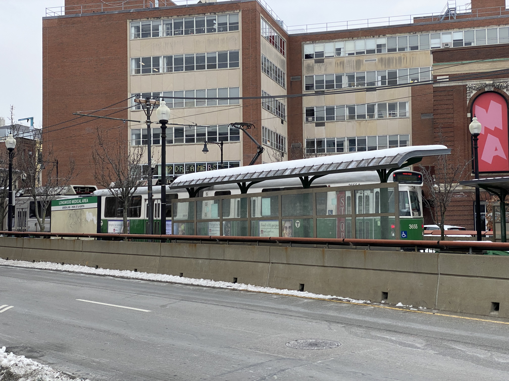

Innovations and sustainability - Starbucks
Exactly a week ago, I posted the idea of Hunu+, a reusable and foldable cup that is easy to carry everywhere, and also envisioned that more will be done by big coffee companies to reduce the wastage and consumption of disposable (one-time use) cups.
It's amazing to see that Starbucks seems to be moving in that direction by launching an innovative 'borrow a cup' program where customers will have to pay a 1$ deposit to use reusable cups and get the credit back once it is returned. It is surely a step towards #sustainability. While in India, where there are small tea stalls (shops) reusable cups are most common, it's exciting to see big coffee companies and chains also moving in that direction.
I can't wait to see it getting started in Boston.
Click here to read further
Innovations can happen at any time, but those that solve our everyday problems have the potential to make the greatest impact. On Kickstarter yesterday, I discovered Hunu, a revolutionary product that solves our landfill issue caused due to single-use cups by using a recyclable and foldable cup. Every year, nearly 60 billion cups end up in landfills, and by switching to reusable cups, we can all help to save the environment. It's ideal for the target audience, who are worried about wasting disposable cups every day but also believe that existing traveler cups are bulky and difficult to carry. By providing reusable and recyclable materials, the solution built is one step toward saving our planet earth. It's a must-watch for any coffee or tea lover. One suggestion though: Having that cup microwavable and insulated can be a great addition to it in the future Click here to read further
|  |
It's time to strengthen our Public transportation system With President Biden taking charge of the US, climate activists around the world are more optimistic than ever.And rightly so, as within days of taking charge, the President decided to join the Paris Climate agreement and also cancel the keystone pipeline.The focus has shifted toward using renewable forms of energy. Click here to read further |
 |
The Applications of Emotions Seismograph in Construction The Construction Industry has long been plagued by several issues such as low productivity and scope creep. As a result, project delays and cost overruns are have become the new normal in many organizations.Lately, there has been a significant focus on the increasing use of technology in Construction with the introduction of 4D and 5D BIM in the Industry. Click here to read further |